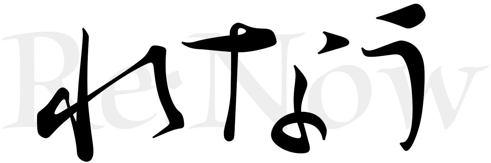

Re:Now (麻雀AI)

はじめに
Re:Nowは天鳳での利用を想定した麻雀AIである。
天鳳はオンライン対戦型麻雀である。2022年5月現在の累計登録ID数は約630万人、アクティブなID数は28万人であり、世界最大の麻雀コミュニティであろう。その中でも鳳凰卓は天鳳における最上位の卓であり、現在22人しか在位していない。鳳凰卓にはプロも参戦しており、まさに麻雀界のトップオブトップが集う卓である[1]。
天鳳は2006年の開設以来、すべての対戦記録や牌譜を保存しており、そのうち鳳凰卓については開設された2009年からの牌譜が公開されている。天鳳はAIの開発支援に積極的（？）で、参戦について専用IDを発行するなどの方法で認めているし、作成した麻雀AIの検証のために鳳凰卓の牌譜を十分活用することを薦めており[2]、麻雀AI開発のために鳳凰卓の牌譜を公開していると言っていいだろう。もっとも、「天鳳と競合する製品への開発・応用を目的として牌譜を使用していただくことはできません。」という注意事項は遵守しなければならない。
機械学習によるゲームAIについては、将棋AIのPonanza[3]や囲碁AIのAlpha Go[4]などが有名である。これらの棋力はすでに人を凌駕しており、プロも学習のためにAIを使う時代であり、藤井聡太五冠はまさにAIが作り上げたと言っても過言ではなかろう。将棋と囲碁のAIは、まずは①過去の棋譜を利用した教師あり学習からはじめ、その後②AI同士の対戦といった強化学習を行う、という流れでここまでの強さを手に入れた。同様の開発の流れが麻雀にも妥当するかどうかは、麻雀と将棋・囲碁のゲーム性の違い（麻雀が不完全情報ゲームである点や、一局ごとの勝敗と最終的な順位は別等）から不明ではあるが、現在麻雀最強AIであるSuphx[5]も将棋・囲碁AIと同様の開発手法をなぞっていることからも、現時点では正解に思える。そこで、本Re:Now開発においても、鳳凰卓の牌譜データを利用した教師あり学習をまずは行うこととする。
機能
- まだ構想段階であり完成形は未定であるが、Playerおよび解析ソフトとしての機能を想定している。
- 普段三麻をすることが多いため、三麻を対象とした麻雀AIを作成することにする。
Re:Nowの由来
Re:Nowは、"I'm ready now."に由来しており、Re:はreadyのことである。
References
[1] 天鳳-ランキング: https://tenhou.net/ranking.html
[2] 天鳳-AIで段位戦を打つ場合の注意点: https://tenhou.net/man/#AI
[5] Junjie Li et. al., Suphx: Mastering Mahjong with Deep Reinforcement Learning, arXiv:2003.13590